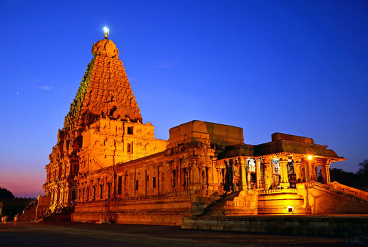
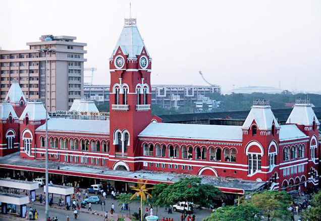

Marina Beach

Marina Beach, or simply the Marina, is a natural urban beach in Chennai, Tamil Nadu. It is a prominent landmark in Chennai.

Brihadishvara Temple, called Rajarajesvaram ('Lord of Rajaraja') by its builder, and known locally as Thanjai Periya Kovil ('Thanjavur Big Temple') in Tamil Nadu, India.
Marina Beach, or simply the Marina, is a natural urban beach in Chennai, Tamil Nadu. It is a prominent landmark in Chennai.

Chennai Central is the main railway station in the city of Chennai, Tamil Nadu, India.